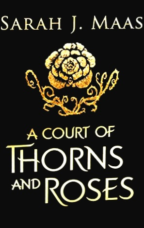
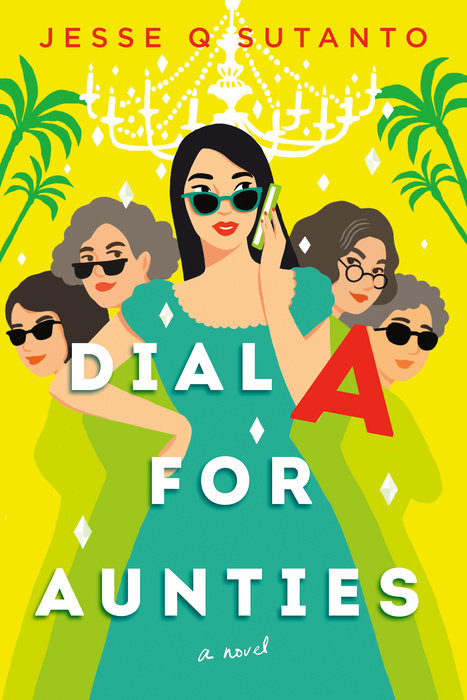

Welcome to Nina's Book Collection
Read
A Court of Thorns and Roses
Rating: 3 stars
When nineteen-year-old Feyre kills a wolf in the woods, a beast-like creature arrives to demand retribution for it. Dragged to a treacherous magical land she only knows about from legends, Feyre discovers that her captor is not an animal, but Tamlin-one of the lethal, immortal faeries who once ruled their world.
As she dwells on his estate, her feelings for Tamlin transform from icy hostility into a fiery passion that burns through every lie and warning she's been told about the beautiful, dangerous world of the Fae. But an ancient, wicked shadow over the faerie lands is growing, and Feyre must find a way to stop it or doom Tamlin-and his world-forever.
See MoreLibrary
Dial A for Aunties
When Meddelin Chan ends up accidentally killing her blind date, her meddlesome mother calls for her even more meddlesome aunties to help get rid of the body. Unfortunately, a dead body proves to be a lot more challenging to dispose of than one might anticipate, especially when it is inadvertently shipped in a cake cooler to the over-the-top billionaire wedding Meddy, her Ma, and aunties are working at an island resort on the California coastline. It's the biggest job yet for the family wedding business—"Don't leave your big day to chance, leave it to the Chans!"—and nothing, not even an unsavory corpse, will get in the way of her auntie's perfect buttercream flowers.
But things go from inconvenient to downright torturous when Meddy's great college love—and biggest heartbreak—makes a surprise appearance amid the wedding chaos. Is it possible to escape murder charges, charm her ex back into her life, and pull off a stunning wedding all in one weekend?
What happens when you mix 1 (accidental) murder with 2 thousand wedding guests, and then toss in a possible curse on 3 generations of an immigrant Chinese-Indonesian family?
You get 4 meddling Asian aunties coming to the rescue!
See MoreTop 3
Anxious People

Looking at real estate isn't usually a life-or-death situation, but an apartment open house becomes just that when a failed bank robber bursts in and takes a group of strangers hostage. The captives include a recently retired couple who relentlessly hunt down fixer-uppers to avoid the painful truth that they can't fix their own marriage. There's a wealthy bank director who has been too busy to care about anyone else and a young couple who are about to have their first child but can't seem to agree on anything. Add to the mix an eighty-seven-year-old woman who has lived long enough not to be afraid of someone waving a gun in her face, a flustered but still-ready-to-make-a-deal real estate agent, and a mystery man who has locked himself in the apartment's only bathroom, and you've got the worst group of hostages in the world.
Each of them carries a lifetime of grievances, hurts, secrets, and passions that are ready to boil over. None of them is entirely who they appear to be. And all of them—the bank robber included—desperately crave some sort of rescue. As the authorities and the media surround the premises, these reluctant allies will reveal surprising truths about themselves and set in motion a chain of events so unexpected that even they can hardly explain what happens next.
See More